Журнал К78
Полезное
о здоровье зубов.
Ответы на частые вопросы о профилактике, лечении и уходе за улыбкой.
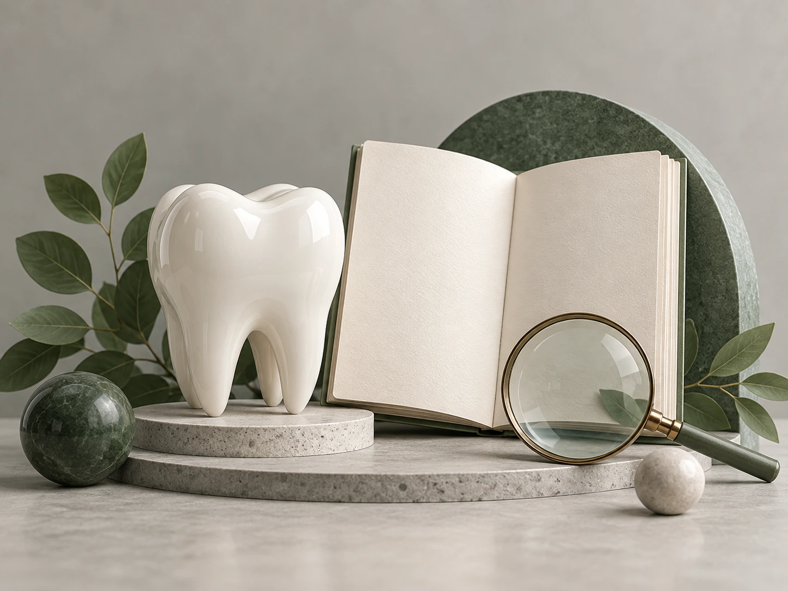
Знания о здоровье зубов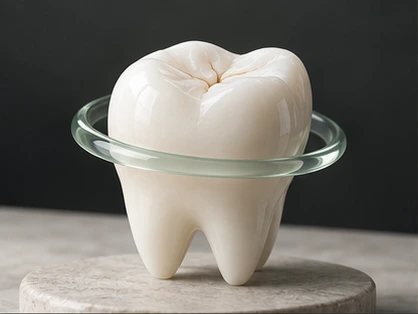
Профилактика · 5 минутКак снизить риск повторного кариеса
Материал объясняет, что повторный кариес возможен и после лечения, поэтому профилактика должна быть постоянной. Риск связывается с сочетанием бактерий, доступных углеводов и уязвимости эмали…Читать материал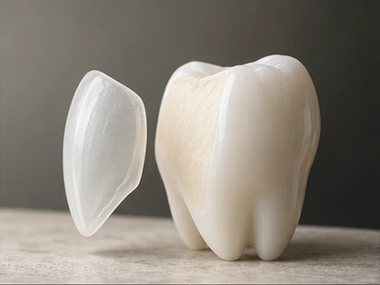
Эстетика · 4 минутыКомпозитный винир: возможности и ограничения
Композитный винир описывается как тонкий слой эстетического реставрационного материала на передней поверхности зуба. Его используют для изменения цвета, формы, небольших неровностей и других…Читать материал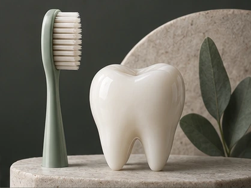
Профилактика · 4 минутыКак поддерживать ежедневную гигиену
Материал посвящён ежедневной профилактике заболеваний зубов и дёсен. Базовая рекомендация — чистить зубы не менее двух раз в день, дополняя щётку межзубной гигиеной и очищением языка. Профес…Читать материал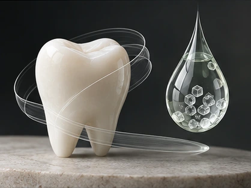
Здоровье · 6 минутЗдоровье полости рта при диабете
Материал посвящён особенностям стоматологического лечения при сахарном диабете. Перед вмешательствами предлагается учитывать степень контроля заболевания и взаимодействовать с лечащим эндокр…Читать материал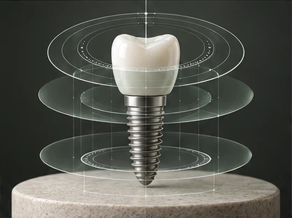
Технологии · 5 минутЦифровое планирование имплантации
Цифровая имплантология описывается как связка диагностики, виртуального планирования, навигационной хирургии и цифрового протезирования. Сначала получают КТ и строят 3D-модель челюсти для оц…Читать материал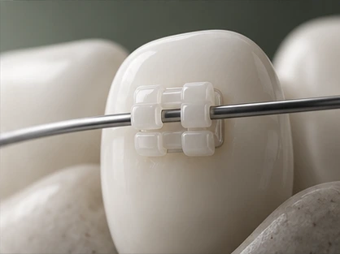
Ортодонтия · 6 минутКак работают ортодонтические силы
Статья объясняет движение зубов через биологию периодонта и ремоделирование кости. При ортодонтической нагрузке на стороне давления идёт резорбция костной ткани, на противоположной — формиро…Читать материал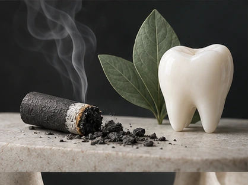
Профилактика · 5 минутКурение и здоровье дёсен
Статья рассматривает курение как значимый фактор риска заболеваний тканей, окружающих зубы. Описаны несколько механизмов: хроническое воспаление и подавление иммунной защиты; ускоренная поте…Читать материал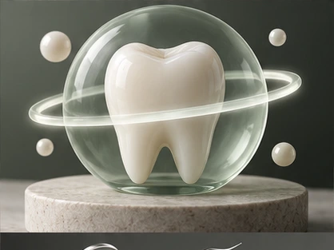
Здоровье · 4 минутыСтоматит: что важно знать
Стоматит описывается как воспаление слизистой полости рта, которое может быть самостоятельным состоянием или проявлением другого заболевания. Возможны отёк, покраснение/бледность, болезненны…Читать материал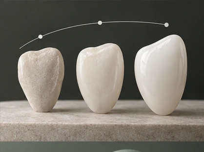
Эстетика · 5 минутЭтапы установки виниров
Статья описывает изготовление виниров как трёхэтапный цифровой процесс. Сначала с пациентом обсуждается желаемая улыбка, проводится фотосъёмка, антропометрические измерения и сканирование зу…Читать материал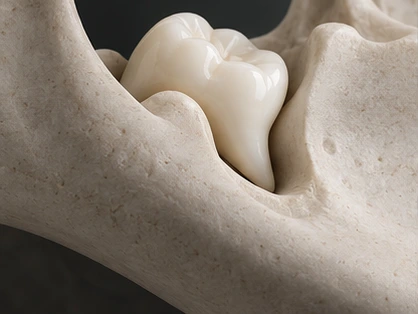
Хирургия · 5 минут